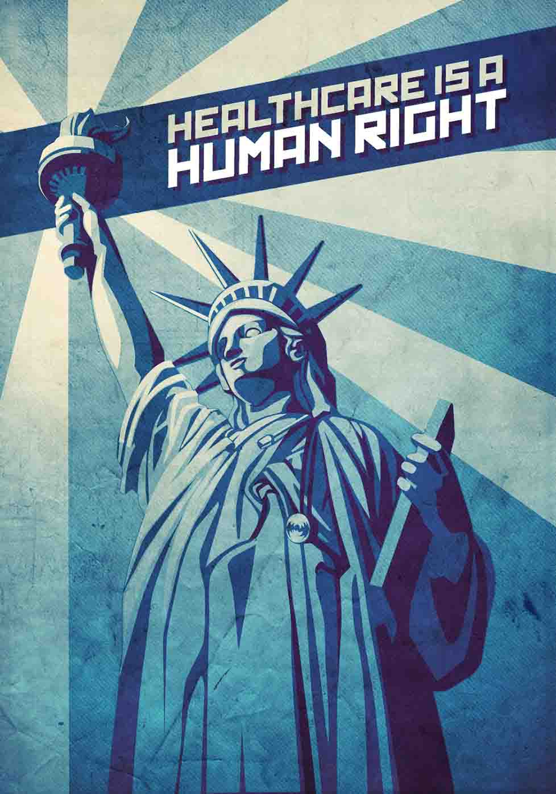

The health of our communities depends on the health of individual members.
The Universal Declaration of Human Rights, for all people and all nations, was proclaimed by the United Nations in 1948. Included as a fundamental right is a standard living that supports the health and well-being of one’s self and family.
World health leaders have asserted that governments must generate conditions in which every person can be as healthy as possible. The right to health does not mean a right to be healthy.
Because of insufficient access to health care and medical resources, 150 million people annually suffer financial catastrophe, and 100 million people pushed below the poverty line, because of personal expenditures related to health.
You can join workers’ campaigns, at your workplace or through a union, to advocate for universal healthcare. Politically, you can join a people’s movement, like one ongoing in Vermont, attend public forums, write letters to elected officials in your state, and vote for health care access.
Even if your own health care needs are covered, look for opportunities to insure access to health care for all.
